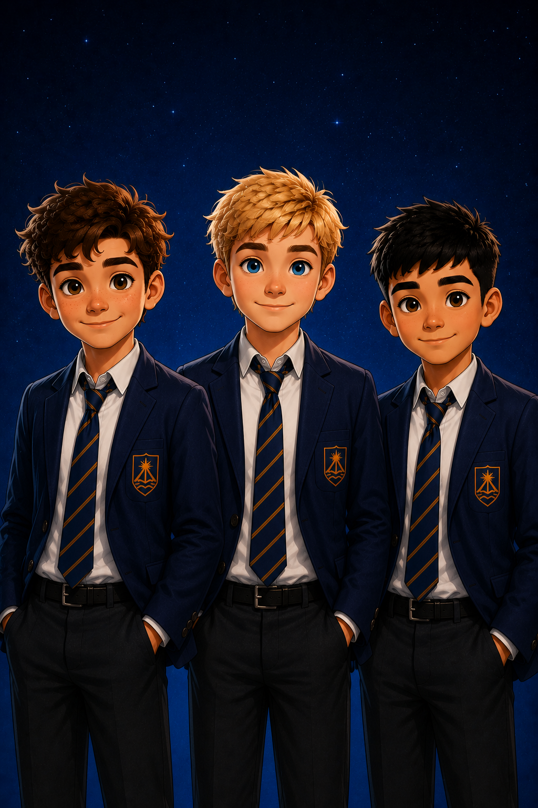
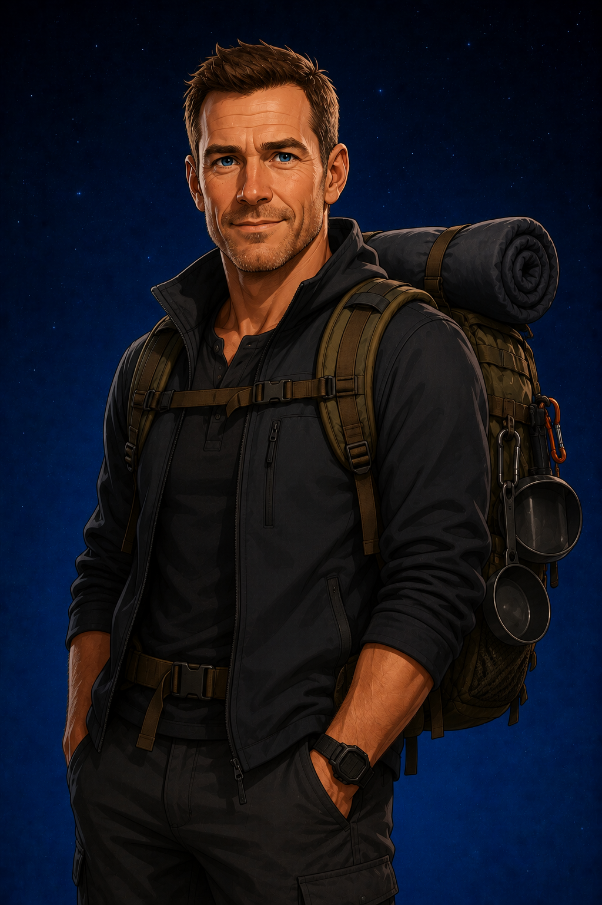

DANIEL
The Practical One
Daniel prefers to think before acting and often helps the group stay focused when excitement takes over.

Tim's Brothers & Friend
“Are we really doing this?”
Daniel and Ben Dawson, together with their friend Luca, are part of Tim's growing circle of friends. Each brings something different to the group, proving that even the smallest adventures are better when they're shared.
WHO ARE THEY?
Daniel and Ben Dawson are Tim's brothers, while Luca is one of their closest friends. Together they share Tim's curiosity, sense of adventure and willingness to help whenever they're needed.
Although each has a different personality, they enjoy exploring, solving problems and encouraging one another when situations become difficult.
Their friendship reminds Tim that even the biggest challenges become easier when faced together.
AT A GLANCE
DANIEL
Daniel prefers to think before acting and often helps the group stay focused when excitement takes over.
BEN
Ben is always ready for the next adventure and rarely needs much encouragement to get involved.
LUCA
Luca enjoys being part of the group and is always willing to lend a hand when his friends need him.
TOGETHER
Different personalities, shared adventures and a friendship built on trust make the group stronger together.
STORY APPEARANCES
Jake is the narrator and central character of the This Is My... series.
THE PEOPLE WHO LEAD THE ADVENTURE
Daniel, Ben and Luca each bring something different to the group, but their greatest strength is learning from one another and from the people around them.

YOUNGER BROTHER
Tim's enthusiasm often inspires the group to take on challenges they might otherwise have avoided.

OLDER STUDENT
Jake's determination and growing confidence give the younger boys someone to admire throughout their own adventures.

SURVIVAL INSTRUCTOR
Ben Hunter challenges the group to discover that courage, teamwork and determination matter far more than experience.
EVERY GREAT ADVENTURE NEEDS A TEAM
Daniel, Ben and Luca remind us that the best adventures are rarely experienced alone. Different talents, shared courage and loyal friendship make every challenge easier to face.
Meet the Rest of the Cast